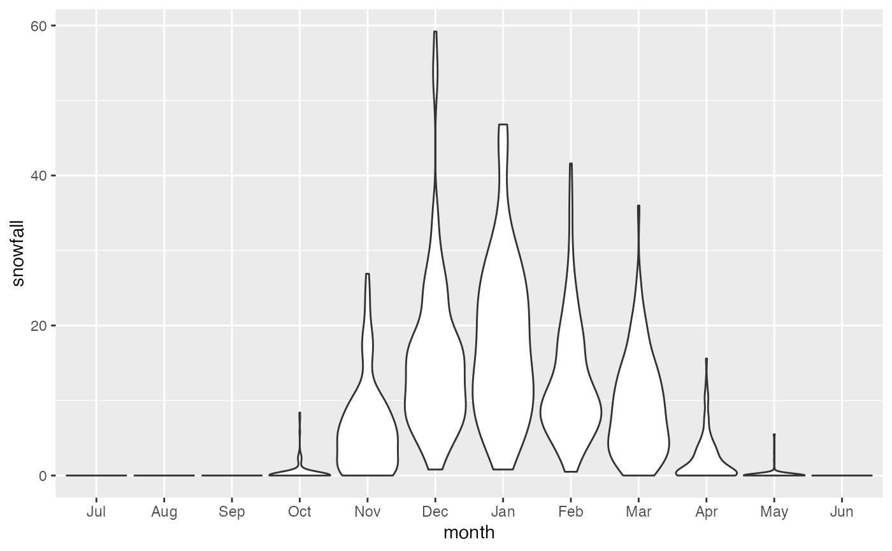

Official snowfall data by month and season for Grand Rapids, MI, going back to 1893.
data(SnowGR)
Format
A data frame with 119 observations of the following variables.
SeasonStartYear in which season started (July is start of season)SeasonEndYear in which season ended (June is end of season)JulInches of snow in JulyAugInches of snow in AugustSepInches of snow in SeptemberOctInches of snow in OctoberNovInches of snow in NovemberDecInches of snow in DecemberJanInches of snow in JanuaryFebInches of snow in FebruaryMarInches of snow in MarchAprInches of snow in AprilMayInches of snow in MayJunInches of snow in JuneTotalInches of snow for entire season (July-June)
Source
These data were compiled by Laura Kapitula from data available from NOAA. The original URL used (http://www.crh.noaa.gov/grr/climate/data/grr/snowfall/) is no longer in service.
Examples
data(SnowGR) if (require(ggformula)) { df_stats(~ Total, data = SnowGR) gf_histogram( ~ Total, data = SnowGR) gf_point(Total ~ SeasonStart, data = SnowGR) %>% gf_smooth() }#>#> Warning: Removed 1 rows containing non-finite values (stat_smooth).#> Warning: Removed 1 rows containing missing values (geom_point).if (require(tidyr) && require(dplyr)) { Snow2 <- SnowGR %>% pivot_longer(Jul:Total, names_to = "month", values_to = "snowfall") %>% filter(month != "Total") %>% mutate(month = factor(month, levels = unique(month))) gf_violin(snowfall ~ month, data = Snow2, scale = "width") }#>#> #>#> #> #>#> Warning: Removed 7 rows containing non-finite values (stat_ydensity).